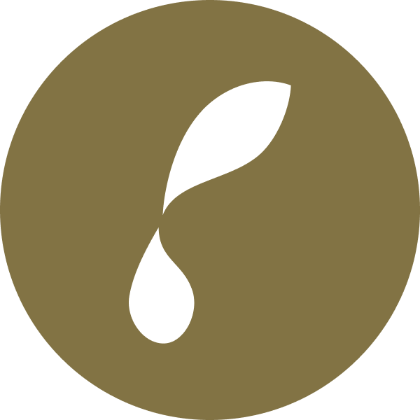

Plantor
Project Overview
The project is in the agriculture industry. We will be solving the problem of users who are new to gardening not knowing what plants they can grow at home. We will be solving this problem by creating a mobile app to provide users with suggestions on plants they can grow at home based on location, season & light exposure.
Via our Android Native Application, users can get top 10 plant suggestions suitable to their inputted information about the environment, whether looking for plants to grow indoor or outdoor. These suggestions can be filtered upon users preference, to view pet-friendly/non-pet-friendly and edible/non-edible options.
Solution
Plant Suggestion
Providing suggestions on what plants users can grow at home based on location, season, and light exposure.
Save Environment
Users will be able to save their location’s environment information in the app to view suitable plants of the environment in the future.
Weather Notification
Users will get notifications about seasonal changes and weather hazards.
The supporting features
Plant Suggestion
The feature provides users suggestions on what plants users can grow at home based on the users’ location, season, and light exposure. This solves the problem of users who want to start gardening at home but do not know what plants they can grow.
Users will provide their location, light source, and the app will provide the top 10 suggestions on what the user can grow at home. This feature will be utilizing the magnetometer (to determine users’ light source orientation), geolocation (to determine the climate based on users’ location), and the date/time functionality (to determine the current season) of the mobile device.
Save Environment
The feature will be used to save user location’s environment information in the app. This makes it more convenient for users to keep track of the plants that they can grow and remember which seeds or starter plants to buy when they get to the plant shop. This will also reduce the number of times users need to input their environment information into the app to get plant suggestions in the future.
Users can save the environment information on the plant suggestion screen after inputting the environment information needed for the app to provide plant suggestions. The saved environment will be stored and displayed on the “Saved” page. Users can always rename or delete the saved environment. When users tap on the saved environment, they will be navigated to the plant suggestion screen and the app will display the suggested plants based on the saved environment’s information.
Weather Notification
The feature will be used to notify users of any seasonal changes and weather hazards. This allows users to reevaluate what plants to grow or adjust how they’re currently growing their plants, especially for users who are growing plants outdoors.
Users will receive push notifications when there are seasonal changes and weather hazards. They can also view the notifications displayed on the “Notifications” page.
Market Research
According to a Grand View Research lawn and gardening consumables market analysis report (https://bit.ly/3DjDNnG), the global lawn and gardening consumables market was valued at USD 19.50 billion in 2019 and is expected to grow to USD 25.94 billion by 2027. Among all the demographics, the residential segment accounts for the largest share of the market of more than 45% in 2019 and is expected to grow at the highest rate.
A common problem with people new to gardening is that they do not know what they can grow at home. That’s when our app can come in handy to solve the problem of the growing number of new residential gardeners. Our app will be recommending to the new residential gardeners what plants they can grow at home.
Competitive Analysis

Design Schedule

We developed our Design concept from emphasizing on problem to Project Launch within 12 weeks. To specify context of use, our team conducted extensive market research and competitive analysis to plan, define scope, and lockdown features.
During ideation, and within the span of 4 weeks, we collaborated on design and iterations of wireframes and visual assets on platforms such as Figma and Creative Cloud. Development of each iteration was built on bi-weekly sprints, which helped us manage tasks and maintain design integrity.
My role as Design Lead consisted of planning for the design schedule and getting approval from the Project manager to ensure deliverable deadlines meets the project development pace. To keep track of the progress of Designers, I broke down deliverables into work packages, and assigned tasks to design team members based on their interests and area of expertise.
Development Schedule

During the first sprint, the Development team planned on the features and conducted research. During weeks 3-4 the development environment was set up and the development process began during weeks 5-7.
By week 8 of Development schedule, we got started on the Alpha build testing and refining bugs accordingly. Code freeze process took place during week 11, which helped us prepare for the presentation preparation, platform demo and rehearsal that took place during week 12.
System Architecture

User Experience
The concept of the project, due to the limited timeline (10 weeks), only focus on the client-side, where the user inputs location and gets access to a variety of listings. The Host-side and how they can create a listing are set for the future roadmap. We anticipated allowing regular users to convert and upgrade their User profile to Host via a button. By providing more detailed information about themselves, property and workspace, they can start creating listings.
The following steps we took during the defining phase of the project to learn more about our prospect user's pain points, needs and how they can use navigation through our platform to accomplish their desired goal. The flowing documentation is a collaborative effort divided equally between the team of 3 designers. As the Lead Designer, I was responsible for guiding towards cohesiveness of the project, branding and meeting deadlines efficiently. All the design team members participate in the early stages of defining the concept.
UX Blueprint
To define the concept, feature lockdown and plan for the steps required to create the features.
User Persona
To create an imaginary profile for our prospect users, taking their pain points, needs and goals into consideration.
Information Architecture
To distinguish the data and dedicate sections and subsections to them in the most intuitive format to create higher engagement within the platform.
Userflow
Contains detailed information about the user navigation through this web app from login process to the final steps after contacting the host.
UX Blueprint

User Persona
The design team collaborated on conducting market research, refining the data and creating two fictional personas that would describe our prospect users clearly. We created three user personas, one described the demographics of a user who would use this platform to list their properties.
Since the MVP of this project covered the client-side of the concept, we chose to showcase the following personas. The remaining user personas displayed here are the descriptions of prospect users that would refer to our platform to find appropriate workspaces.


User Interface
Work In Progress...